| Take | Hero at 1024, then renders at 128 / 64 / 48 / 32 / 16 css px (2× retina sources), plus the 16px squint magnified | Rubric | Verdict |
|---|---|---|---|
| A · icon.svghand-authored layered SVG, build_icon.py — SHIPS |
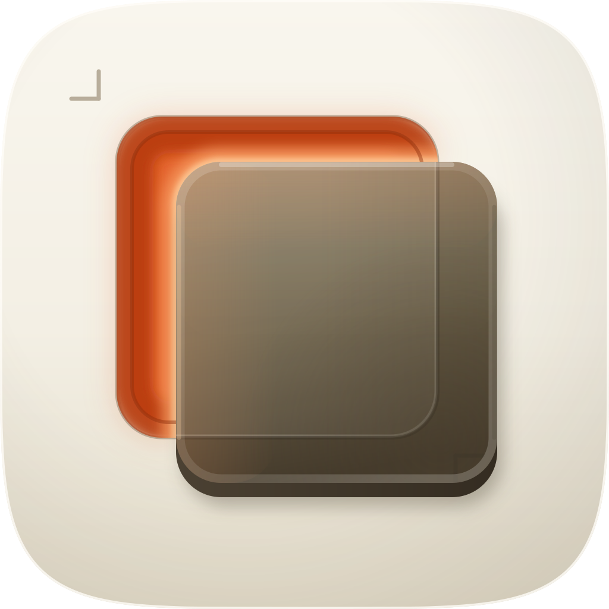 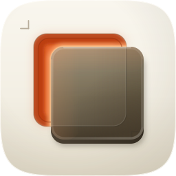 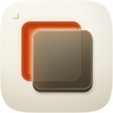 |
11 / 12 | Passes all four non-negotiables on real renders: family squircle with no baked corner or shadow, union of the two rectangles 640px wide and centred on (516, 516), a silhouette that is nameable as two plates out of register, and a 16px read of dark slab plus warm L (in-mask 16px luminance spread 0.2405 against a family median of 0.169). Four named layers, so the ember and every rim light can drop out without the mark ceasing to be itself. Loses #7: measured against its own dilated surround the object clears the floor at 4.03:1, but the slab's lightest decile — its top rim and lit bevel — sits at 2.40:1 against the porcelain beside it, the porcelain register's standing trade (test-campaign 2.06:1, create-skill 1.48:1 on the same measure). Material rebuilt from C1 over two measured rounds. |
| B · icon-engineB-arrow-fcbac9.svgArrow 1.1 vector take |
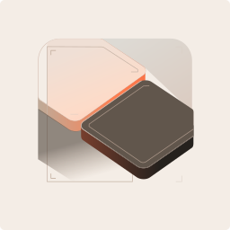 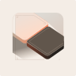 |
6 / 12 | Hard-fails #1 — it drew its own rounded-square artwork boundary inside the canvas, which is a baked mask sitting inside the family's superellipse — and #2, since that artwork floats inset rather than full-bleed. Fails #6 with three hue families (a blush pink upper plate, a grey diagonal field, the brown lower plate), #9 on era (flat isometric, no cushion, no gel), #10 as a consequence of the baked boundary, and #4: at 32px the two isometric plates fuse into one lozenge and the misregistration is gone. Salvaged into the master: nothing material, but it independently reached for corner brackets on the reference, which confirmed the device is legible as registration rather than as decoration. |
| C1 · icon-engineC-4e2ac1.pngGPT Image 2, 4 reference images — the material target |
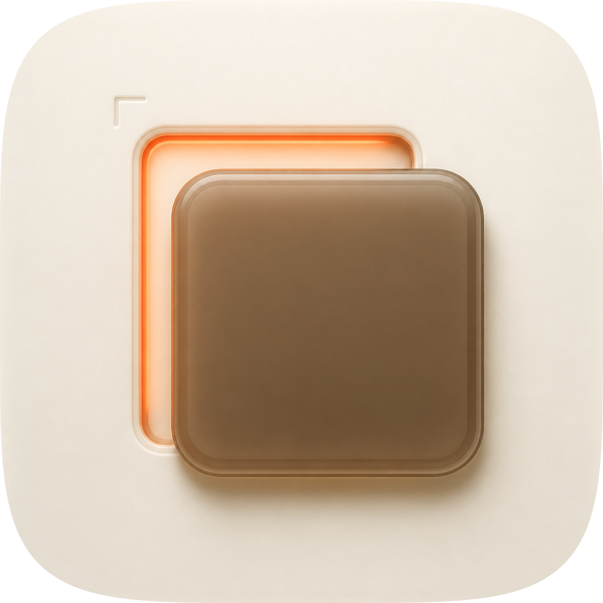 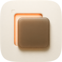 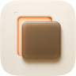 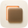 |
10 / 12 | Won the material read and became the reference the master was measured against. Fails #10 the way every flat pre-masked raster does — one baked layer, identity hostage to a colour relationship. Fails #6 on a measurement rather than a taste: 26.8% of its tile reads warm-saturated because its slab shares the ember's hue family, against 8.5% in the master, so the accent is not reserved to the focal. Also drifts the accent to peach (S 0.50 against the family's 0.70–0.90), which the master deliberately did not follow. What it taught, sampled on matched geometry: a gel body's face is flat across its width and lit top-to-bottom (0.61 at the top rim to 0.33 at the base) with lighter transmitted rims at both side edges (0.43 and 0.47 against a 0.37 body) — the master had a diagonal ramp and a dark right edge, which reads as a lit opaque plane. |
| C2 · icon-engineC-d2d9dc-2.pngGPT Image 2, same brief, second take |
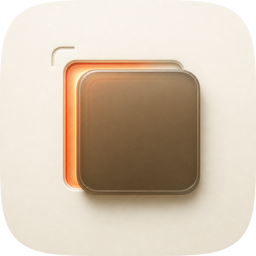 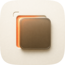 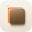 |
9 / 12 | The same construction as C1 with the misregistration halved: the exposed strip survives on the left arm and all but disappears along the top, so the mark reads as a slab with a hot left edge rather than as one thing laid off register against another — that costs #11 as well as #10 and #6. Its top-left bracket also came out as a rounded quarter-arc, which reads as a stray hook. Kept on disk because its slab carries the most convincing transmitted edge of any take (lightest decile 0.4112 against a 0.1616 body) and because a losing take that is deleted cannot be re-examined when someone disagrees later. |
#bg cushion and reference, #mid the lit gap and the contact shadow, #fg the slab and the mock read through it, #highlight every rim and bounce), which map one-to-one onto Icon Composer layers, and identity carried by shape and value — two same-sized rectangles out of register — rather than by the ember. It passes fidelity.py structure at 9 paths, 11 gradients, 4 filters and 18KB, and its material was rebuilt from C1 across two measured rounds (five-size composite 0.7317 → 0.7479, then 0.7465 on a round kept against a flat score because the perimeter bevel it added is what makes the slab read as a body). Known liabilities to revisit: (1) the slab's lit top rim and bevel sit at 2.40:1 against the porcelain, so half the object's boundary is carried by rim light and contact shadow alone and will soften under a heavy tint; (2) the silhouette is nameable but generic — filled black it is two offset rounded rectangles, and what makes it this icon is the ember in the gap, which a silhouette test cannot see; (3) the corner brackets and the mock's line read through the gel both vanish below about 48px, so the two devices that carry the argument are large-size only; (4) the ember occupies 8.5% of the tile, which is generous for this family's usual accent restraint, and is the first thing to reduce if the icon shouts on a shelf; (5) the fidelity numbers above were computed on the numpy tier, with no torch on this machine, so LPIPS never ran — the material was not measured by the scorer at 256 and 1024, and every material decision here rests on hand-sampled profiles off C1 plus the eye, not on the gate. No gate verdict was taken, deliberately.| Take | object vs its own dilated surround | object lightest decile vs surround | warm-saturated share of tile | 16px in-mask luminance spread |
|---|---|---|---|---|
| A (ships) | 4.03:1 | 2.40:1 | 8.5% | 0.2405 |
| B | 5.51:1 | 1.92:1 | 1.3% | 0.2036 |
| C1 | 3.84:1 | 1.70:1 | 26.8% | 0.2195 |
| C2 | 3.79:1 | 1.74:1 | 21.5% | 0.2217 |
| sibling test-campaign | 2.95:1 | 2.06:1 | 3.3% | 0.1728 |
| sibling create-skill | 2.18:1 | 1.48:1 | 10.6% | 0.1762 |
python3 audit_sheet.py render . (1024 / 256 / 128 / 96 / 64 / 32 sources); verified by its check subcommand.